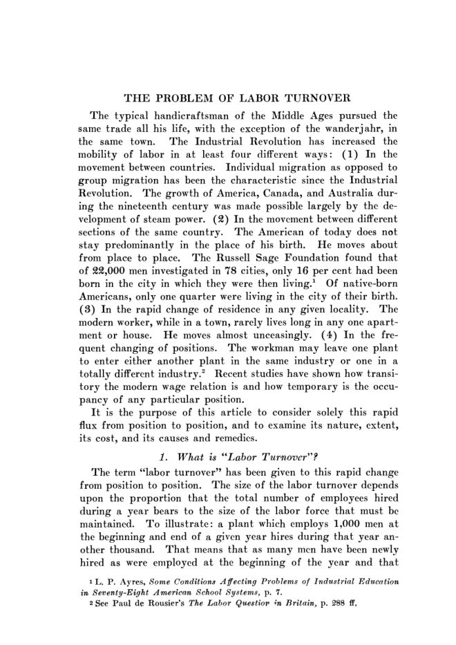

Douglas, 1918: o custo de contratar e perder trabalhadores
Leitura: 8 min
Paul H. Douglas reúne os primeiros levantamentos sobre a rotatividade da mão de obra nas fábricas americanas, estima seu custo e propõe departamentos de pessoal, participação nos lucros e produção regular como remédios.


Entre outubro de 1912 e outubro de 1913, a Ford contratou 54 mil homens para manter uma força de trabalho média de 13 mil. Para cada posto, quatro contratações por ano, uma rotatividade de 416%, que custou à empresa, segundo as estimativas reunidas por Paul H. Douglas, mais de US$ 2 milhões. O caso é o mais extremo do artigo que Douglas, do Reed College, publica no número de junho de 1918 da American Economic Review, mas não é isolado.
O ponto de partida é histórico. O artesão típico da Idade Média exercia o mesmo ofício a vida inteira, na mesma cidade, com exceção do ano de viagem do aprendiz. A Revolução Industrial aumentou a mobilidade do trabalho de quatro modos: entre países, com a migração individual; entre regiões do mesmo país; de residência dentro da mesma cidade; e de emprego. A Russell Sage Foundation encontrou, entre 22 mil homens pesquisados em 78 cidades, só 16% nascidos na cidade em que viviam. O artigo trata só da última mobilidade, a troca de posto, sua natureza, extensão, custo, causas e remédios.
Como se mede a rotatividade?
O termo labor turnover designa a proporção entre o número de contratados no ano e a força de trabalho que precisa ser mantida. Uma fábrica com mil homens no início e no fim do ano que contrata outros mil empregou 2 mil pessoas para preencher mil postos: rotatividade de 100%. Com 500 contratados, 50%; com 2 mil, 200%.
A conta se complica quando a empresa cresce ou encolhe. Se a força de trabalho passa de mil para 1.200 homens durante o ano, 200 das mil contratações são acréscimos líquidos, e só 800 são reposições. A rotatividade pode então ser calculada sobre os 1.200 do fim do ano, 67%, ou sobre a média de 1.100, 73%. Por causa dessa confusão, Douglas sugere uma medida alternativa, a duração média de um emprego: três meses equivalem a 400%. Poucas pesquisas, porém, a usavam.
Alguma rotatividade é inevitável. Como a indústria emprega sobretudo pessoas nas idades de menor mortalidade, a taxa de mortes dificilmente passaria de 1% ao ano. Warren e Sydenstricker estimavam que o assalariado americano perdia em média nove dias por ano por doença, mas doenças curtas não exigem reposição. Somando mortes, doenças e acidentes, Douglas calcula que essas causas não responderiam por mais de 5% ou 6%.
Quanto os trabalhadores trocavam de emprego?
Não havia levantamento nacional; o Bureau of Labor Statistics pesquisava o tema havia mais de dois anos, sem publicar resultados. Douglas recorre a estudos de empresas. W. A. Grieves, da Jeffery Manufacturing Company, fez em dezembro de 1914 a primeira análise detalhada: 20 fábricas metalúrgicas do Meio-Oeste contrataram 69 mil pessoas para manter uma média de 44 mil, 157% no ano.
Magnus Alexander, da General Electric, estudou doze fábricas metalúrgicas em seis estados em 1912. Começaram o ano com 37.274 empregados, terminaram com 43.971 e contrataram 42.571. Descontado o aumento líquido de 6.697, houve 35.874 reposições: rotatividade de 82% sobre o pessoal do fim do ano, ou de 88% sobre a média. Boyd Fisher encontrou 252% em 57 fábricas de Detroit. A Plimpton Press teve 186% em 1912.
No campo e na construção, os números eram maiores. Carleton Parker, estudando o trabalho casual na costa do Pacífico, encontrou uma fazenda de frutas secas na Califórnia com rotatividade mensal de 176% e uma obra na Sierra, com força normal de 950 homens, com 158% ao mês. Segundo ele, um emprego de colheita durava em média sete dias, e um na construção, dez.
Quanto custa trocar um trabalhador?
Douglas admite que a rotatividade alta nem sempre é prejuízo para o empregador. Uma fábrica com muitas encomendas urgentes e salários altos pode ter interesse em esgotar seus homens em poucos meses e substituí-los, e muitas fábricas de munições fizeram isso em 1915 e 1916. Para a eficiência social é má economia; para a empresa pode ter compensado.
Em regra, porém, o empregador perde. Os custos são o trabalho burocrático de contratar e demitir, a instrução dada pelos capatazes, a produção menor do novato até atingir o ritmo pleno, as quebras, acidentes e desperdício de material e as máquinas paradas enquanto o posto fica vago. O custo varia conforme o tipo de trabalhador: Alexander separava mecânicos muito qualificados, mecânicos de menor qualificação, operadores, trabalhadores sem qualificação e pessoal de escritório.
Para o país, Douglas considera muito conservadora uma estimativa entre 100 e 200 milhões de dólares por ano.
Por que os trabalhadores saem?
As causas que Douglas aponta são seis: métodos ruins de contratação e demissão, com homens contratados em massa e demitidos sumariamente por capatazes pouco hábeis no trato com pessoas; falta de promoção interna, que leva o trabalhador a buscar melhora em outra fábrica; a sazonalidade, que obriga a dispensar e recontratar; o trabalho juvenil, inquieto por natureza; a monotonia do trabalho fabril especializado; e os salários baixos, que fazem do emprego um quebra-galho.
“Esse deslocamento excessivo de posto em posto demonstra claramente que algo está errado na indústria.” (“This excessive shifting from position to position clearly demonstrates that something is wrong with industry.”)
Que remédios funcionaram?
O remédio mais proposto é um departamento de emprego especializado, com responsabilidade sobre contratação, acompanhamento e demissão. Ele poderia selecionar melhor, com testes físicos e uma classificação grosseira dos trabalhadores por formação e capacidade; conferir referências e manter lista de espera; receber e treinar os novatos com instrutores próprios; vigiar ventilação, iluminação, poeira e riscos de acidente; investigar por que um homem fracassa antes de demiti-lo, porque o trabalhador representa um investimento do empregador; e manter uma política clara de promoção.
Douglas descreve o departamento como a extensão ao lado humano da indústria dos princípios científicos já aplicados ao lado mecânico. Os exemplos são de redução forte: a Dennison Manufacturing Company passou de 68% para 37% ao ano; a Joseph Feiss Company, de Cleveland, reduziu a rotatividade a um terço; a Plimpton Press chegou a 10%; e a Ford caiu de 416% para menos de 80%. Ele ressalva que outros fatores contribuíram: Dennison e Ford adotaram formas de participação nos lucros, e Dennison e Feiss regularizaram a produção.
Os demais remédios dependem da causa. Para a sazonalidade, o departamento de pessoal não serve; servirá a regularização da produção, quando os empregadores reconhecerem o custo da rotatividade. Para o trabalho juvenil, Douglas defende elevar a idade de entrada na indústria de 14 para 16 anos. Para a monotonia, pouco se pode fazer dentro da fábrica além de transferir os homens entre máquinas; a vocação humana para inventar teria de encontrar saídas fora da indústria.
Na minha leitura
Na minha leitura, a principal contribuição do artigo é transformar uma queixa em medida. Ao definir a rotatividade como razão entre contratações e força de trabalho, discutir a base do cálculo e propor a duração média do emprego como alternativa, Douglas permite comparar fábricas, setores e anos. E ao separar a rotatividade inevitável, de 5% ou 6%, da observada, de 100% ou mais, isola o que pode ser atribuído à gestão.
O segundo passo é tratar o trabalhador como capital. Se cada contratação custa dezenas de dólares em treinamento, produção perdida e quebras, reter empregados é um investimento com retorno calculável, e o departamento de pessoal se justifica pela economia que produz. O mesmo raciocínio explica por que as empresas pequenas não o teriam e por que a regularização da produção entra na conta.
Glossário
- Rotatividade da mão de obra (labor turnover)
- proporção entre os contratados no ano e a força de trabalho que a empresa precisa manter.
- Reposição
- contratação que substitui um trabalhador que saiu, distinta do acréscimo líquido ao quadro.
- Departamento de emprego
- setor centralizado que contrata, acompanha, transfere e demite os trabalhadores.
- Participação nos lucros
- distribuição aos empregados de parte do lucro da empresa.
- Trabalho casual
- emprego de curta duração, típico de colheitas e obras.
Fontes
- The Problem of Labor Turnover — Paul H. Douglas (Reed College) (pp. 306–316). JSTOR · Internet Archive (PDF)
- Edição completa, com os demais artigos: Nº 152 do Arquivo.
Documento em domínio público (EUA, publicado antes de 1931), via JSTOR Early Journal Content e Internet Archive. Resumo e comentário do autor deste site, sem afiliação com a American Economic Association. Encontrou um erro? Escreva: a correção é publicada no próprio texto, com data.
← Kemmerer, 1918: quanto a guerra inflou o dólar ↑ Nº 152 · A inflação de guerra, o ouro do Federal Reserve e o preço de revenda